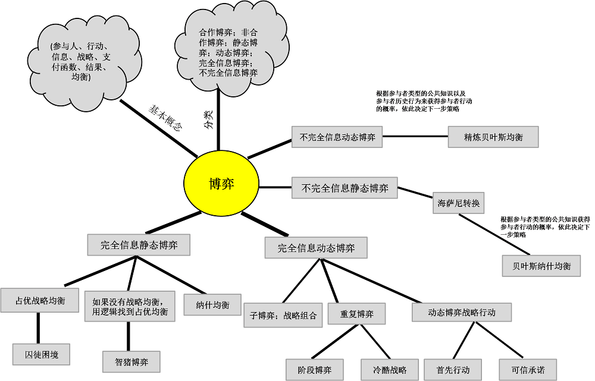

博弈论简介
博弈论（英语：game theory），又译为对策论，经济学的一个分支，1944年冯·诺伊曼与奥斯卡·摩根斯特恩合著《博弈论与经济行为》，标志着现代系统博弈理论的的初步形成，因此他被称为“博弈论之父”。博弈论被认为是20世纪经济学最伟大的成果之一。目前在生物学、经济学、国际关系、计算机科学、政治学、军事战略和其他很多学科都有广泛的应用。
概述
博弈论考虑游戏中的个体的预测行为和实际行为，并研究它们的优化策略。表面上不同的相互作用可能表现出相似的激励结构（incentive structure），所以它们是同一个游戏的特例。其中一个有名有趣的应用例子是囚徒困境。
具有竞争或对抗性质的行为称为博弈行为。在这类行为中，参加斗争或竞争的各方各自具有不同的目标或利益。为了达到各自的目标和利益，各方必须考虑对手的各种可能的行动方案，并力图选取对自己最为有利或最为合理的方案。比如日常生活中的下棋，打牌等。博弈论就是研究博弈行为中斗争各方是否存在着最合理的行为方案，以及如何找到这个合理的行为方案的数学理论和方法。
分类

动态博弈
动态博弈是指参与人的行动有先后顺序，而且行动在后者可以观察到行动在先者的选择，并据此作出相应的选择。
静态博弈
静态博弈是指博弈中参与者同时采取行动，或者尽管参与者行动的采取有先后顺序，但后行动的人不知道先采取行动的人采取的是什么行动。
完全信息静态博弈
纳什均衡
纳什均衡，又称为非合作博弈均衡，是博弈论的一个重要术语，以约翰·纳什命名。在一个博弈过程中，无论对方的策略选择如何，当事人一方都会选择某个确定的策略，则该策略被称作支配性策略。如果两个博弈的当事人的策略组合分别构成各自的支配性策略，那么这个组合就被定义为纳什均衡。
术语
局中人（players）：在一场竞赛或博弈中，每一个有决策权的参与者成为一个局中人。只有两个局中人的博弈现象称为“两人博弈”，而多于两个局中人的博弈称为 “多人博弈”。
策略（strategies）：一局博弈中，每个局中人都有选择实际可行的完整的行动方案，即方案不是某阶段的行动方案，而是指导整个行动的一个方案，一个局中人的一个可行的自始至终全局筹划的一个行动方案，称为这个局中人的一个策略。如果在一个博弈中局中人都总共有有限个策略，则称为“有限博弈”，否则称为“无限博弈”。
得失（payoffs）：一局博弈结局时的结果称为得失。每个局中人在一局博弈结束时的得失，不仅与该局中人自身所选择的策略有关，而且与全局中人所取定的一组策略有关。所以，一局博弈结束时每个局中人的“得失”是全体局中人所取定的一组策略的函数，通常称为支付（payoff）函数。
次序（orders）：各博弈方的决策有先后之分，且一个博弈方要作不止一次的决策选择，就出现了次序问题；其他要素相同次序不同，博弈就不同。
博弈涉及到均衡：均衡是平衡的意思，在经济学中，均衡意即相关量处于稳定值。在供求关系中，某一商品市场如果在某一价格下，想以此价格买此商品的人均能买到，而想卖的人均能卖出，此时我们就说，该商品的供求达到了均衡。所谓纳什均衡，它是一稳定的博弈结果。
参考链接
- 博弈论,by wikipedia.
- 博弈论, by 智库百科.
- 漫画：什么是 “智猪博弈” ？,by 小灰.
- Matlab_对策论、微分稳定方程,by Lanyun.
- Minimax算法及实例分析,by witnessai1.
- 庞特里亚金最大化原理,by wikipedia.
- AI的博弈论，一份插图教程,by 磐创AI.